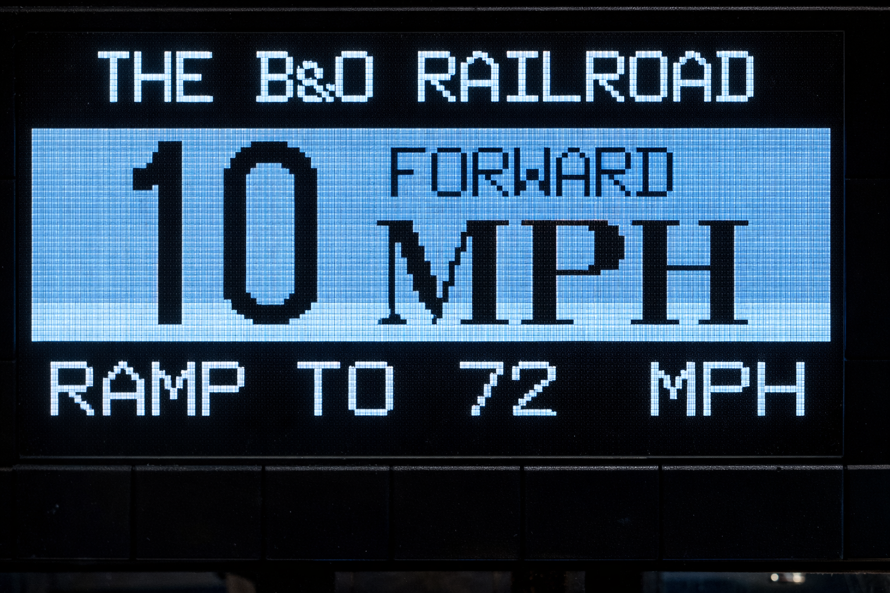

Control Tower
Powered by RailOS™
A smart control instrument for all model railroad types. Smooth motion physics, automatic station docking, and signal + station lighting choreography — with a bold architectural display designed to be easy to enjoy.

An instrument, not a transformer
RailStation turns ordinary track power into an intelligent control console. It calibrates to your train and layout, finds stations reliably, and runs beautifully paced legs with a subtle human element — without being complicated.
Simple settings. Real behavior.
RailOS uses a few playful traits to shape timing and feel — station dwell, leg pacing, ramp character, and lighting choreography. You change a setting; the system behaves differently.
- High Frequency
- Peak
- Off-Peak
- Bullet
- Shuttle
- Freight
- Nonstop
- Limited
- Unpredictable
- Local
- Short Run
- Long Haul
Built-in lines (editable, reorderable, persistent)
- Pennsylvania Line
- Hogwarts Express
- California Zephyr
- Reading Railroad
- The Polar Express
- Union Pacific R.R.
- The Orient Express
- Broadway Limited
- The Silver Streak
- The B&O Railroad
- The Flying Rocket
- Grand Central Line
- Flying Scotsman
- Cannonball Express
- The Blue Comet
- Taking Pelham 123
- Vanderbilt Central
- The Circle Line
- Empire State Exp
- The Great Ghan
- Hudson River Ltd
- 20th Century Ltd
Run for hours. Or grab the knob.
RailStation can run continuously in repeating sequences for 2–3 hours. Manual override is instant — turn the knob and you’re driving. Let go, and RailOS smoothly blends you back into automation.
Reserve RailStation
$499
Includes the traffic light, large display, and station sensor. (Add a simple email form here, or link to your checkout / waitlist.)